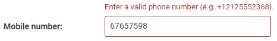

use this package with phone number field
it uses to validate if number is correct

install the package:
pip install django-phonenumber-field
pip install django-phonenumbers

insert the package into INSTALLED_APPS list:
INSTALLED_APPS = [
    ...
    "phonenumber_field",
]

use it in the model:

from phonenumber_field.modelfields import PhoneNumberField
phone_number = PhoneNumberField()

example:
invalid data:

valid data:

